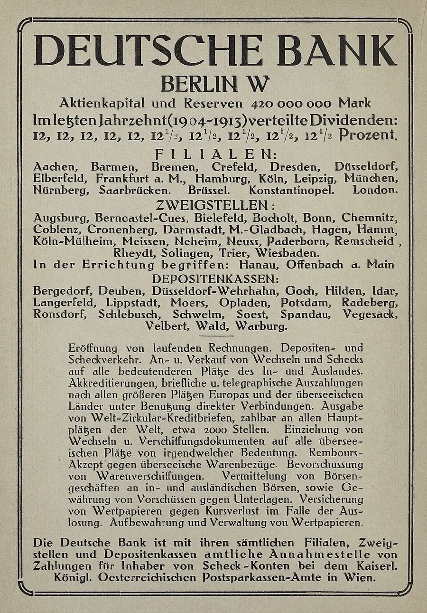
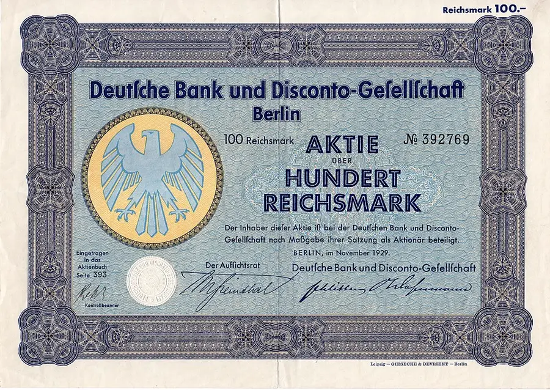
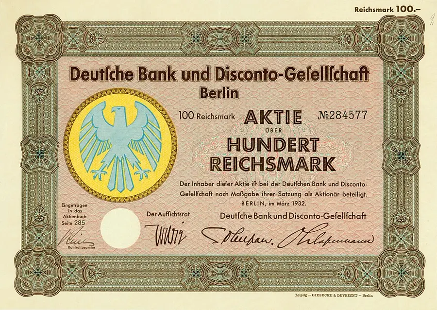

대표 로고대표 브랜드 마크
대표 로고대표 브랜드 마크도이체 방크 Deutsche Bank
도이체 방크(Deutsche Bank)는 독일 프랑크푸르트에 본사를 둔 주요 상업은행이자 세계적인 투자은행이다. 기관과 개인, 기업 고객을 대상으로 금융 상품과 서비스를 제공한다.
최종 업데이트
도이체 방크는 어떤 브랜드인가
도이체 방크는 유럽과 아메리카, 아시아를 비롯한 세계 시장에서 상업은행과 투자은행 사업을 수행한다. 70여 국가에 십만명이 넘는 직원을 두고 있으며 독일에서는 1,200개가 넘는 지점을 운영한다.
기관과 개인, 기업 고객에게 세일즈와 트레이딩, 인수합병, 기업재무관리, 소매금융 관련 상품과 서비스를 제공한다. 파생상품을 비롯한 위험 관리 상품도 사업 영역으로 다룬다.
2018년에는 시장 점유율 21%를 기록하며 세계 최대 외환 딜러의 위치를 차지했다. 프랑크푸르트 증권거래소와 뉴욕증권거래소에 상장한 금융회사이다.
도이체 방크는 어떻게 시작되고 성장했나
도이체 방크는 해외무역에 특화된 은행으로 1870년 베를린에서 게오르크 지멘스와 루트비히 밤베르거가 설립했다. 같은 해 1월 22일 은행 규정을 만들고 3월 10일 프로이센 정부로부터 은행 자격을 승인받았다.
설립 목적은 금융 전반을 취급하면서 독일과 다른 유럽 국가, 해외 시장 사이의 무역 관계를 촉진하는 것이었다. 첫 국내 지점은 1871년 브레멘과 1872년 함부르크에 열었으며, 1872년 상하이와 1873년 런던에 진출했다.
이후 철도와 철강, 화학 산업 관련 사업에 참여하고 국내외 지점을 확대하며 성장했다.
도이체 방크의 브랜드 아이덴티티는 무엇인가
독일의 해외무역 지원을 목적으로 출발해 상업은행과 투자은행 기능을 함께 운영하며 세계 금융시장에 진출한 은행이라는 점이 특징이다.
도이체 방크의 대표 제품과 서비스는 무엇인가
도이체 방크는 기관과 개인, 기업을 대상으로 금융 상품과 서비스를 구성한다. 투자은행 영역에서는 세일즈와 트레이딩, 인수합병, 기업금융을 수행하며 채권과 주식, 주식 연계 상품, 외환과 단기금융상품을 취급한다.
장내·장외 파생상품과 증권화 상품, 상품선물 등 다양한 금융 상품의 판매와 거래도 담당한다. 기업재무관리와 소매금융을 운영하고 고객의 금융 위험을 관리하기 위한 파생상품과 관련 서비스를 제공한다.
독일의 지점망과 세계 주요 금융 중심지의 해외 지점을 통해 이러한 사업을 전개한다.
도이체 방크는 지금 어떤 상태인가
도이체 방크는 프랑크푸르트의 도이체 방크 호흐하우스에 본사를 두고 프랑크푸르트 증권거래소와 뉴욕증권거래소에 상장한 기업이다. 2019년 2분기 31억5천만유로의 적자를 기록한 뒤 3분기에도 적자가 이어졌으며, 코메르츠방크와의 합병 논의는 무산됐다.
같은 해 전 직원의 20%에 해당하는 1만8천명 감원 계획을 발표하고 글로벌 주식매매와 트레이딩에서 철수하는 등 투자은행 부문 감축을 추진했다. 신흥국 증권자산 50억달러를 골드만삭스에 매각했다.
도이체 방크 로고는 어떻게 변해왔나
대표 로고대표 브랜드 마크사진으로 보는 도이체 방크의 역사



자주 묻는 질문
도이체 방크는 어느 나라 브랜드인가요?
도이체 방크는 독일의 금융 브랜드입니다.
도이체 방크는 언제 설립되었나요?
도이체 방크는 1870년 설립되었습니다.
도이체 방크의 브랜드 아이덴티티는 무엇인가요?
독일의 해외무역 지원을 목적으로 출발해 상업은행과 투자은행 기능을 함께 운영하며 세계 금융시장에 진출한 은행이라는 점이 특징이다.
도이체 방크의 대표 제품은 무엇인가요?
도이체 방크는 기관과 개인, 기업을 대상으로 금융 상품과 서비스를 구성한다.
도이체 방크는 현재 어떤 상태인가요?
도이체 방크는 프랑크푸르트의 도이체 방크 호흐하우스에 본사를 두고 프랑크푸르트 증권거래소와 뉴욕증권거래소에 상장한 기업이다.
도이체 방크의 창업자는 누구인가요?
도이체 방크의 창업자는 루트비히 밤베르거입니다(위키데이터 기준).
도이체 방크의 본사는 어디에 있나요?
도이체 방크의 본사는 프랑크푸르트에 있습니다(위키데이터 기준).
출처와 검증
도이체 방크 관련 참고: 공식 웹사이트 · 위키데이터 Q66048 · 한국어 위키백과 · 영어 위키백과. 브랜드명은 한글과 원어를 함께 표기하되 데이터에 없는 표기는 만들지 않습니다. 기원 국가·설립연도는 검수된 정의문에서 확인된 값을 우선하고, 없을 때만 공식 웹사이트 URL이 일치하는 위키데이터 개체의 값을 씁니다. 탄생일의 월·일은 위키데이터, 위키백과 정보상자, 본문 가운데 같은 연월로 확인되는 값만 싣고, 출처끼리 다르면 싣지 않습니다. 웹 첫 보관은 인터넷 아카이브가 공식 사이트 첫 화면을 처음 보관한 날로, 사이트 개설일과 다를 수 있습니다. 위키데이터 값은 2026-09-12 기준입니다.